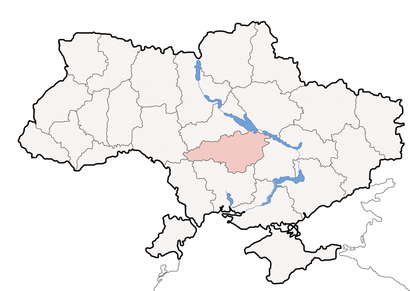
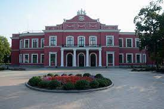
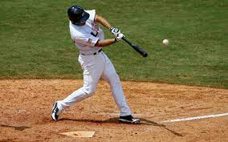

The population of Kropyvnytskyi is 230 thousand people. The area of Kropyvnytskyi is 103 km². The city is located in the center of Ukraine.
The history of Kropyvnytskyi began in 1882. Then the first Ukrainian professional theater was opened. Its founder was Marko Kropyvnytskyi. At the moment, the theater is an important monument of Kropyvnytskyi. The city has the Fortress of Saint Elizabeth, the monument to the first tram.
Kropyvnytskyi is located on the Ingul River. City Day in Kropyvnytskyi is celebrated every year on the third Saturday of September. The famous Kropyvnytskyi mountains are the Pansky Mountains.

People like to play baseball in Kropyvnytskyi. The people of Kropyvnytskyi became champions of Ukraine many times. The city has a large football stadium "Zirka".
Сторінку створив Білібін Данило